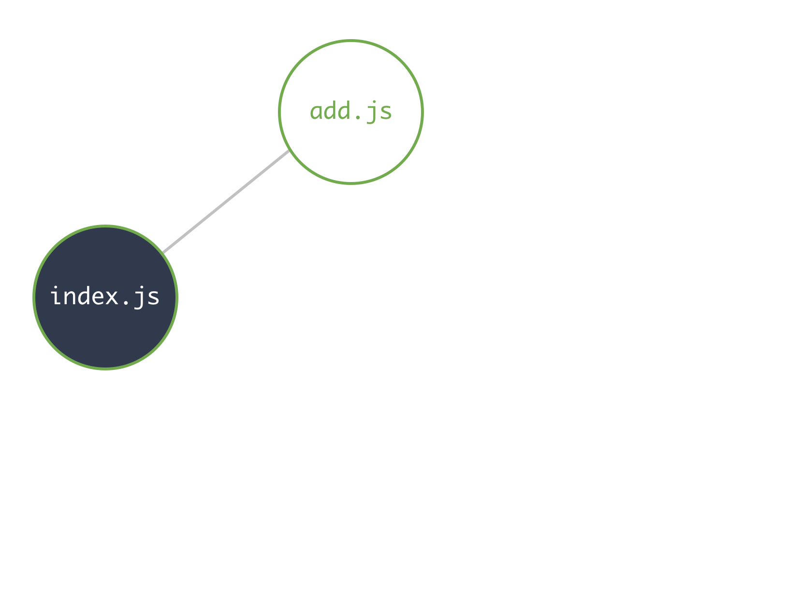
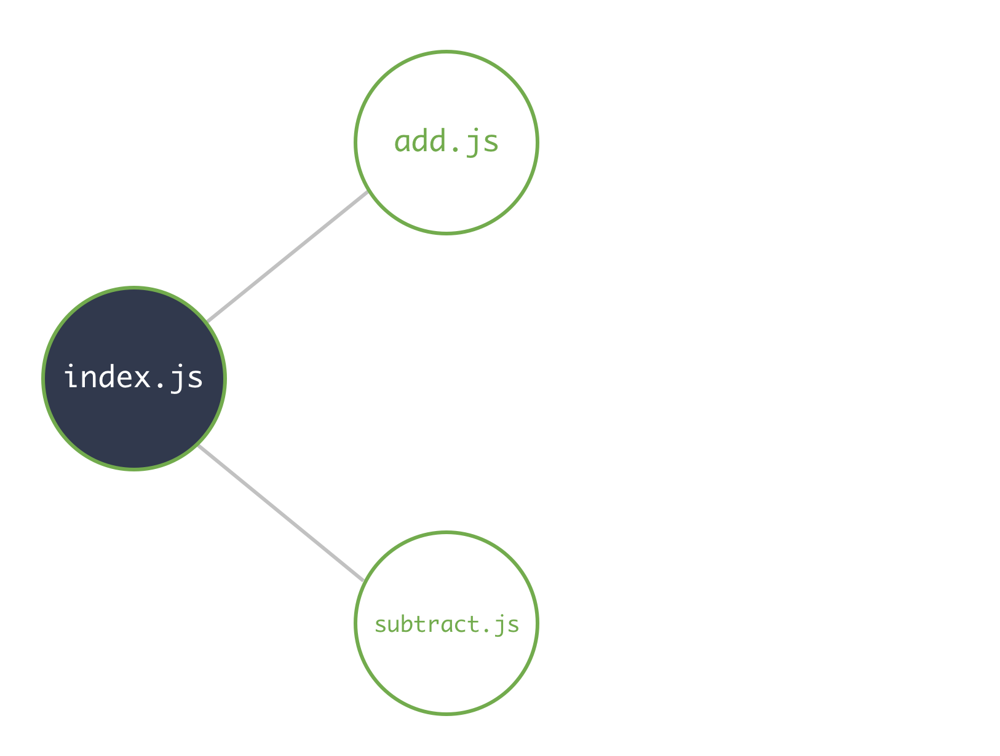
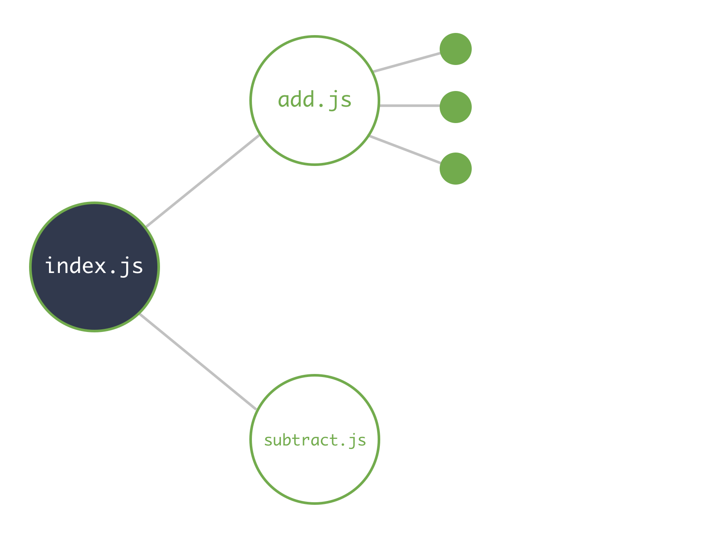
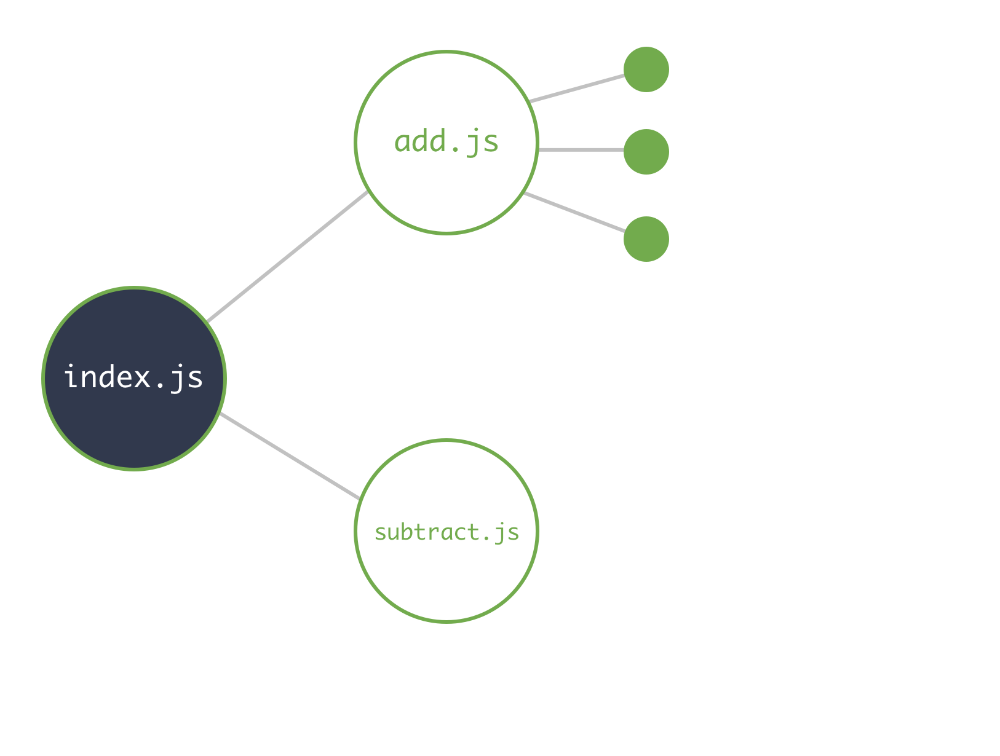
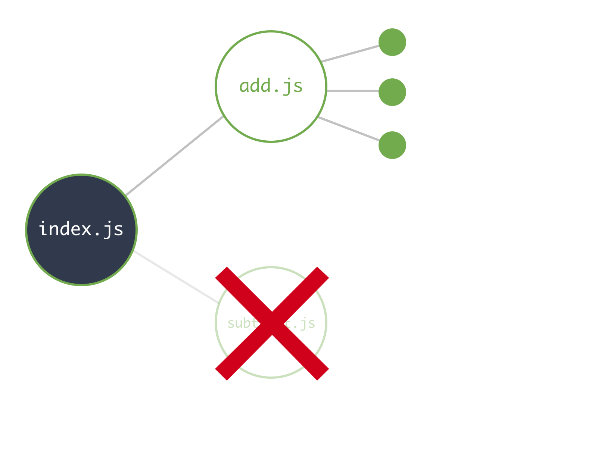

class: center, middle # Hacking on and growing javascript projects [bit.do/syrjs](http://bit.do/syrjs) --- # Overview 1. Javascript in the browser (with chrome). 2. Javascript on the server (with node). 3. A high level introduction to the module system in node. 4. A discussion the the differences between popular module systems. 5. The little known, cool new `import()` operator! --- # In the browser console  --- <img src="http://i.imgur.com/4OMWuuI.png" style="width: 100%;" /> --- # Scratchjs <img src="http://i.imgur.com/3Xwvp3X.png" style="width: 100%;" /> --- # In node Visit [nvm.sh](nvm.sh), and run the install snippet: ```sh curl -o- https://raw.githubusercontent.com/creationix/nvm/v0.33.2/install.sh | bash ``` <img src="http://i.imgur.com/pYclfSC.png" style="width: 100%;" /> --- <img src="http://i.imgur.com/RPlqYB9.png" style="width: 100%;" /> --- ```javascript function magic(a, b) { return a + b; } console.log('Magic on 4 and 5 produces', magic(4, 5)); // 9 ``` --- ```javascript function magic(a, b) { const magicCoefficientA = Math.sqrt(Math.pow(a, 2) + Math.pow(5, b)); const magicCoefficientB = Math.sqrt((a + b) / (a - b)) + 5 / 9; return a > b ? (magicCoefficientB * b) + (magicCoefficientA * a) : (magicCoefficientA * b) + (magicCoefficientB * a); } console.log('Magic on 4 and 5 produces', magic(4, 5)); // ??? ``` --- ```javascript function calculateCoefficientA(a, b) { return Math.sqrt(Math.pow(a, 2) + Math.pow(5, b)); } function calculateCoefficientB(a, b) { return Math.sqrt((a + b) / (a - b)) + 5 / 9; } function magic(a, b) { const magicCoefficientA = calculateCoefficientA(a, b); const magicCoefficientB = calculateCoefficientB(a, b); return a > b ? (magicCoefficientB * b) + (magicCoefficientA * a) : (magicCoefficientA * b) + (magicCoefficientB * a); } console.log('Magic on 4 and 5 produces', magic(4, 5)); // ??? ``` --- <h1 class="full-page">Module Systems</h1> --- ---  ---  ---  --- # Some Module Systems - CommonJS: ```javascript const m = require('./my/module.js'); module.exports = 123; ``` - AMD: ```javascript define('myModule', ['dependency1', 'dependency2'], function(dep1, dep2) { return 123; // Exported out of `myModule`. }) ``` - ES2015 modules: ```javascript import m from './my/module.js'; export default 123; ``` - SystemJS, RequireJS, AngularJS modules, UMD, and more - And more... --- # TL;DR <iframe src="https://giphy.com/embed/eSjmuv0wMC9r2" width="480" height="274" frameBorder="0" class="giphy-embed" allowFullScreen></iframe><p></p> --- # Input and output ```javascript function(dependency1, dependency2) { return "result"; } ``` --- <h1 class="full-page">CommonJS</h1> --- # CommonJS <center> <div class="big-banner">module.exports = myThing;</div> The module's public exports. </center> --- # CommonJS <center> <div class="big-banner">module.exports = {one: 1, two: 2};</div> Modules can export multiple things, too!<br/> Just encapsulate multiple values into an array or object. </center> --- # CommonJS <center> <div class="big-banner">const myModule = require('./path/to/module.js');</div> From another module, get the contents of the given module's <code>module.exports</code>. </center> --- # CommonJS <center> <div class="big-banner"> const mod = require('./path/to/module.js'); console.log(mod.one, mod.two); // 1, 2 </div> To import multiple things from a module, unpack the return value of <code>require</code>. </center> --- # CommonJS - Example ```javascript // add.js function add(a, b) { return a + b; } module.exports = add; ``` ```javascript // index.js const add = require('./add'); console.log('Adding 4 and 5 produces', add(4, 5)); ``` And, when run: ```sh $ node index.js Adding 4 and 5 produces 9 ``` --- <h1 class="full-page">Demo</h1> --- <h1 class="full-page">ES2015</h1> --- # ES2015 <center> <div class="big-banner">export default myThing;</div> The module's public, default export. </center> --- # ES2015 <center> <div class="big-banner">import myModule from './path/to/module.js';</div> Used to extract the exported value from the given module path. </center> --- # Named exports... WTF? Two types of exports: Named exports and default exports. ```javascript // This module exports two things, `namedExportOne` and `namedExportTwo` import { namedExportOne, namedExportTwo } from './my/module.js'; // This module exports one thing by default, `defaultExport` import defaultExport from './my/other/module.js'; // Or, both! import foo, { bar, baz } from './my/crazy/module.js'; ``` --- # ES2015 <center> <div class="big-banner"> export default 'foo';<br/> export const one = 1;<br/> export const two = 2; </div> Named exports forgo the `default` keyword.<br/> The <code>export</code> keyword is used multiple times. </center> --- # ES2015 <center> <div class="big-banner"> import foo, {one, two} from './index.js';<br/> console.log(foo, one, two); // 'foo', 1, 2 </div> To import multiple things from a module, request names and default values in the import statement. </center> --- <h1 class="full-page">Demo</h1> --- # Import operator <center> <div class="big-banner"> const a = './path/to/module.js';<br/> import foo from a; </div> Won't work! </center> --- # Why - Static analysis / Tree shaking  --- # Why - Static analysis / Tree shaking  <!-- Don't know where the exports some from? Can't tree shake. --> --- # Import operator ```javascript const a = './path/to/module.js'; import(a).then(m => { // m is your module reference! }); ``` [Read More](http://2ality.com/2017/01/import-operator.html) --- # How the module operator works - Implementation dependant - Webpack = uses voodoo or follows the spec - Rough implmentation (according to spec): ```javascript function importOperator(path) { return fetch(path).then(resp => { if (resp.ok) { return resp.text().then(code => { const wrapped = `var result = (function(){ ${code} })();`; eval(wrapped); return result; }); } }); } ``` <marquee style="animation: change-color 5s infinite" >Only execute trusted javascript! Only execute trusted javascript! Only execute trusted javascript!</marquee> --- # Thanks! <img style="width: 100%;" src="http://i.imgur.com/W7vDy7K.png" />